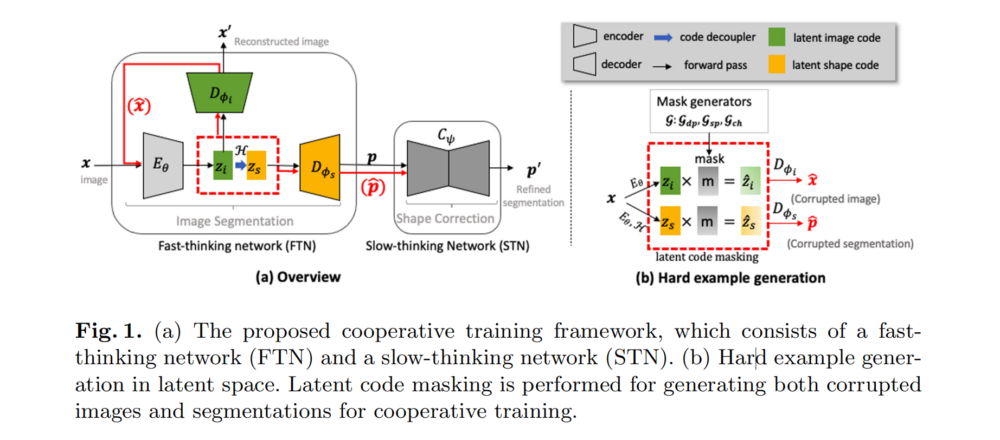
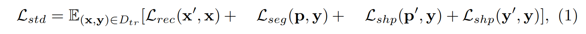
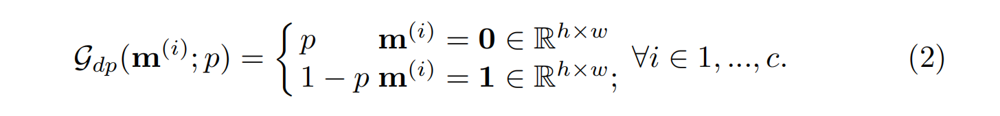
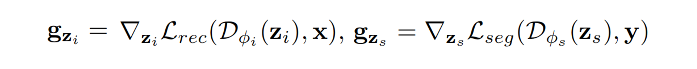
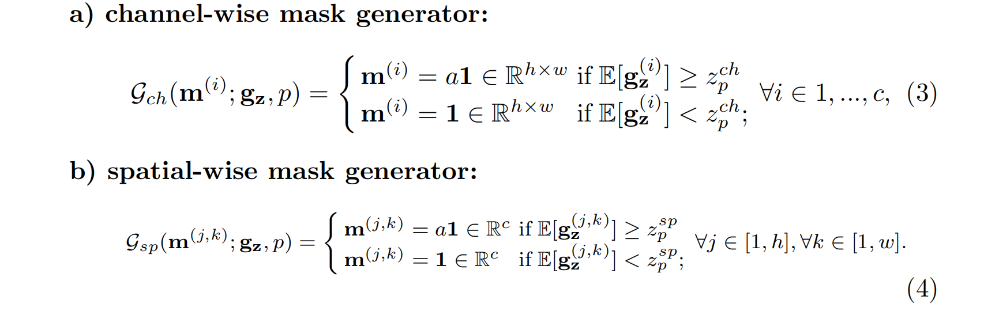
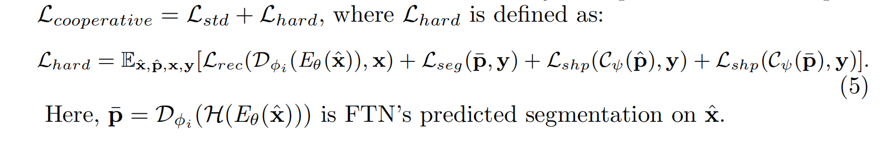
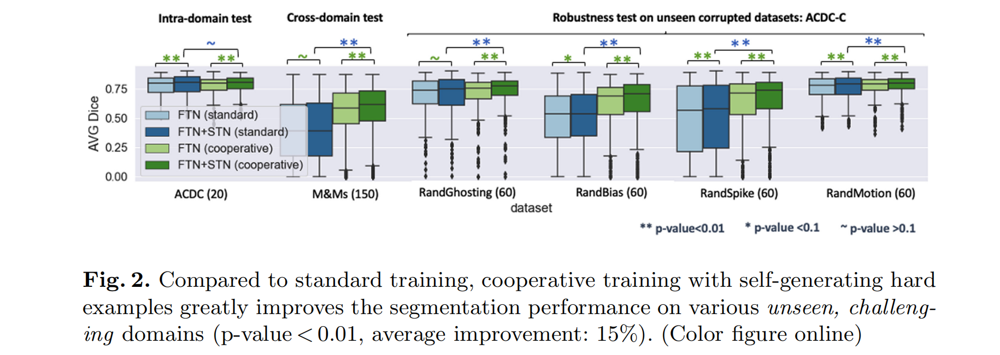
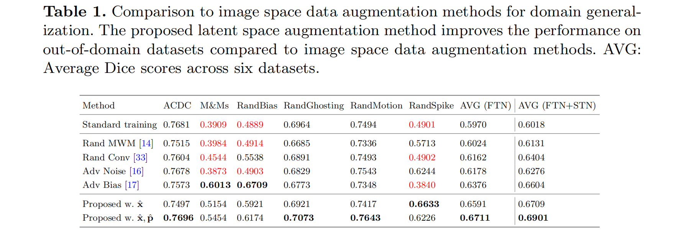
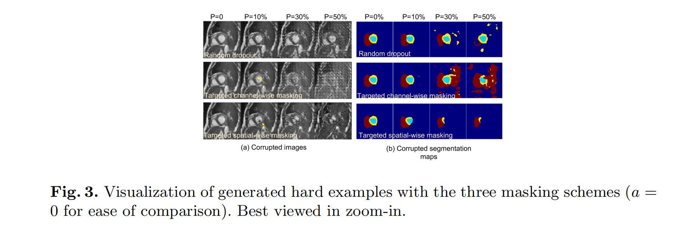
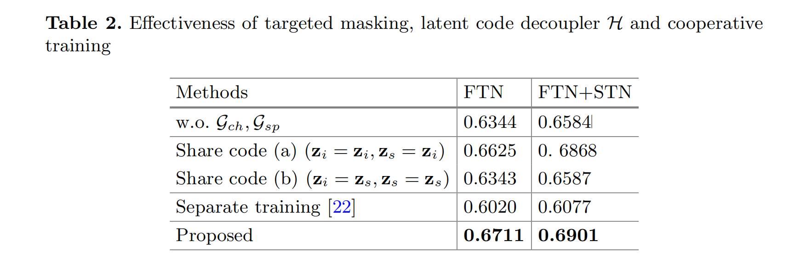

Cooperative Training and Latent Space Data Augmentation for Robust Medical Image Segmentation
论文题目：协同训练和隐空间数据增强的鲁棒性医学图像分割
会议：MICCAI 2021
作者：Chen CHEN 陈晨
-
Research Assistant/PhD 伦敦帝国理工学院 Research Assistant/PhD
-
本科哈工大 物联网工程
代码：https://github.com/cherise215/Cooperative_Training_and_Latent_Space_Data_Augmentation
Abstract
基于深度学习的分割方法在部署过程中容易受到不可预见的数据分布（unforeseen data distribution）变化的影响，例如，不同扫描仪引起的图像外观或对比度的变化，伪影等。本篇论文提出了一个用于图像分割模型的协同训练框架和一个用于生成困难样本的隐空间数据增强方法，提升了模型的泛化性和有限数据的稳健性。
- 协同训练框架由 fast-thinking network(FTN) 和 slow-thinking network(STN) 构成。FTN 学习解耦的图像特征和形状特征，用于图像重建和分割任务； STN 学习形状先验，用于分割校正和细化。
- 隐空间数据增强（latent space DA）是通过在通道和空间上遮盖解耦的隐空间，为训练生成具有挑战性的样本。
在公共心脏成像数据集进行了广泛的实验，证实了分割性能的提高，以及提高了对各种不可预见的成像伪影的稳健性。与标准的训练方法相比，具有隐空间数据增强的协同训练在平均 Dice 提高了15%。
1 Introduction
将基于深度学习的方法部署到实际应用中的一个主要障碍是临床部署过程中的域转移（domain shift），其中包括不同医疗中心和扫描仪的图像外观和对比度的变化，以及各种成像伪影。在 Multi-domain datasets 上学习域不变的特征进行分割可以解决上面的问题，但是 Multi-domain 数据的获取成本较高，因此从 single-domain 和有限的数据中学习稳健的网络，对医学影像研究具有重要的实用价值。
本篇论文提出了一个新的协同训练框架，用于从 single-domain 数据中学习到一个稳健的分割网络。主要贡献可以总结如下：
（1）设计了一个由两个网络组成的协同训练框架
这个框架启发自人类行为中的双系统模型：快速思维系统做出直觉判断，而慢速思维系统则通过逻辑推理进行纠正。
对应到框架中，fast-thinking network (FTN) 旨在理解图像的上下文，并提取与任务相关的图像和形状特征进行初始分割；slow-thinking network (STN) 根据学习到的形状先验来完善初始分割。
（2）提出了一种隐空间数据增强方法 latent space data augmentation (DA) method
随机和有针对性的方式对从 FTN 中学习到的隐编码（latent code）进行通道和空间的遮盖（屏蔽），这样就会重建出一组多样化的挑战性图像和对应的分割图，以加强两个网络的训练。
2 Methodology
single domain dataset $D_{tr} = {(x_i, y_i)}^{n}_{i=1}$
image $x_i \in \mathbb{R}^{H \times W}$
one-hot encoded C-class label maps $y_i \in {0, 1}^{H \times W \times C}$ （ground truth）
2.1 Framework

给定输入图像 x，FTN 提取特定任务的形状特征 $z_s$ 来执行分割任务，提取图像上下文特征 $z_i$ 来执行图像重建任务。共享 encoder $E_{\theta}$，特征解耦器 $\mathcal{H}$， 两个特定任务的解码器 $D_{\phi_s}$、$D_{\phi_i}$ 用于图像分割和重建任务。
对 $z_i$ 应用特征解耦器 $\mathcal{H}$，使与分割任务无关的信息（如图像纹理信息、亮度）在 $z_s$ 中被停用，稀疏的 $z_s$ 有益于模型的稳健性。
$\mathcal{H}$ 由两个卷积层堆叠，后接 ReLU 激活函数。图像重建需要低层次的信息，而图像分割则依赖于更集中的高层次信息。引入 $\mathcal{H}$ 明确地定义了一个分层的特征结构，以提高模型的通用性；
STN 是一个去噪自动编码器网络 $C_{\psi}$，学习形状先验来纠正 FTN 预测的分割。在推理时，FTN 进行对给定的图像 x 进行快速分割：$p = D_{\phi_s}(\mathcal{H}(E_{\theta}(x)))$；STN 完善分割结果：$p’ = C_{\psi}(p)$。
2.2 Standard Training
用监督的多任务损失函数联合训练三个编码器-解码器对，损失包含：图像重建 $L_{rec}$、图像分割 $L_{seg}$、形状校正 $L_{shp}$。

- $L_{rec}$ 是 Mean Squared Error(MSE)
- $L_{seg}, L_{shp}$ 是 cross-entropy function
- $y’ = C_{\psi}(y)$
2.3 Latent Space Data Augmentation for Hard Example Generation
为了缓解过拟合，提出了 latent space DA method，使得 FTN 可以自动构建具有挑战性的样本。
掩码生成器 $\mathcal{G}$ 在 latent code $z$ 上产生一个掩码 m，之后 $\hat{z} = z \cdot m$ 输入到解码器重构出被破坏的图像 $\hat{x} = D_{\phi_i}(\hat{z_i})$ 和其对应的分割图 $\hat{p} = D_{\phi_s}(\hat{z_s})$。这就是 latent code masking 数据增强方法。
通过动态屏蔽 latent code，所提出的方法可以生成具有广泛多样性的图像外观和分割的样本。如下介绍几种 latent-code masking 方案：
（1）Random Masking with Dropout
latent-code 的整个通道在训练时以 p 的概率被掩盖为全零。

被遮盖后第 i 个通道的结果为：$\hat{z}^{(i)} = z^{(i)} \cdot m^{(i)}$。$z \in \mathbb{R}^{c \times h \times w}$。
（2）Target Masking
提出了有针对性的 latent-code masking 方案，该方案以梯度为线索来识别要掩蔽的“突出”特征。 采取图像重建损失和图像分割损失，分别计算 $z_i$ 和 $z_s$ 的梯度 $g_{z_i}$和 $g_{z_s}$。

对梯度值进行排序，可以确定出那些最具预测性的元素。作者假设，对损失函数反应较高的元素是导致在不可预见的域转移下性能下降的主要原因。因此，对这种元素进行有针对性的遮蔽，以模拟数据分布的转移（data distribution shifts）。可以在通道维度和空间维度遮蔽 latent-code $z$ 的特征。

- $z^{ch}_p, z^{sp}_p$ 阈值
- a 是 (0, 0.5) 之间随机抽取的退火系数，创建 soft masks；
Channel-wise masked code at i-th channel：
$\hat{z}^{(i)} = z^{(i)} \cdot m^{(i)}$
Spatial-wise masked code at (j, k) position：
$\hat{z}^{(j, k)} = z^{(j, k)} \cdot m^{(j, k)}$
2.4 协同训练
训练过程中，随机地将上面介绍的三种 mask generator 应用于 $z_i, z_s$，这个操作生成一组丰富的增强图像 $\hat{x}$ 和分割图 $\hat{p}$。这就得到 3 example pairs 用于训练：
- corrupted images-clean images $(\hat{x}, x)$
- corrupted images-GT $(\hat{x}, y)$
- corrupted GT-GT $(\hat{p}, y)$
合作训练的最终损失定义为简单例子和困难例子上的损失的组合。

3 Experiments and Results
应用与心脏图像分割任务，从 MR 图像中分割出左心室腔、左心室心肌和右心室。
数据集：
-
ACDC：训练、intra-domain 测试
-
M&Ms：cross-domain 测试
-
ACDC-C (corrupted ACDC)：评估数据增强方法的鲁棒性
（1）实验 1：Standard Training vs Cooperative Training

- 两种方法在域内测试集上取得了相近的性能；
- 双网络（FTN+STN）的协同训练在域外测试集上取得了更高的性能；
- 隐空间数据增强方法数据上，协同训练也表现出了其优越性。
（2）实验 2: Latent Space DA vs Image Space DA


Table 1 中 AdvBias 在 M&Ms 数据集和 RandBias 上取得了最好的性能，但这种方法有一个副作用，使其对尖峰伪影更加敏感（Dice 得分 0.4901 vs 0.3840）。latent-space DA 在六个数据集上取得了最高的平均性能。
图 3. 本篇论文的方法不仅可以生成扰动的图像，还可以生成不确定性增加的真实的损坏的分割。
（3）实验 3：Ablation Study
(a) the proposed targeted masking; b) latent code decoupler H; c) cooperative training.

- 禁用 $\mathcal{G}{ch}、\mathcal{G}{sp}$ 后，平均 Dice 得分从 0.6901 降至 0.6584；
- 图像重建需要低层次的信息，而图像分割则依赖于更集中的高层次信息。引入 H明确地定义了一个分层的特征结构，以提高模型的通用性；
- 突出了合作训练策略加强基于学习的形状细化和修正；
4 Conclusion
- 提出了一个新的协同训练框架，以及一个 latent space masking-based 的数据增强方法；
- 实验验证了模型的通用性和对不可预见的领域转变的鲁棒性；
- latent-space DA 方法只需要很少的代价；
- 目前只在心脏图像分割上展示了其性能，该通用框架有可能扩展到广泛的数据驱动的应用。